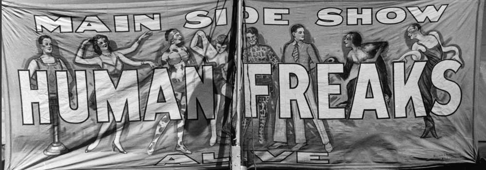

|  |
| Home | Talent | Cosmetic | Deformity | Abnormal | Ethnological |
Excesive Body Parts
Also seen freuqnely in Victorian Freak Shows were people with excess body parts. The image to the left shows a girl with 4 legs. While some people do have this legtitimate deformity, there also also ways to manipulate the audience into thinking that this is a real occurance. It may be so that there is actually another, smaller, person sitting underneath this girl's skirt to make it appear as though she has extra limbs.
|